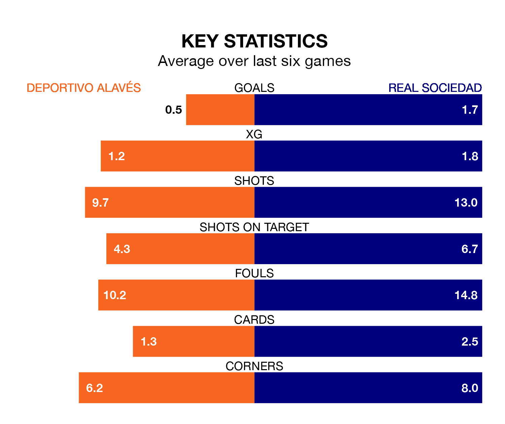

Deportivo Alavés host Real Sociedad on Sunday at Estadio de Mendizorroza in La Liga.
In their last league match, on March 16, Alavés lost to Athletic Club Bilbao 2-0 away.
La Real won, 2-0 at home against Cádiz on March 15, with Arsen Zakharyan and Mikel Merino on the scoresheet.
With Álex Remiro between the sticks, La Real can rely on one of the league's safest pair of hands. He has kept 11 clean sheets in his 28 appearances this season, and only one other 'keeper – Athletic Club Bilbao's Unai Simón – has been able to prevent the opposition scoring on more occasions in La Liga.
In Alavés's net, Antonio Sivera has seven clean sheets in 29 games. He has conceded a goal every 84 minutes, 30% more often than the 112 minutes between goals for Remiro Gargallo.
In the last 10 years, Alavés and La Real have played each other on 13 occasions. Alavés won three of them, La Real seven, and they drew three times.
On average, Alavés scored 0.5 goals and la Real 1.4 in those matches.
Their last meeting was on January 2, when they played out a 1-1 draw.
With 26 goals in 29 games so far this season, Depor are scoring at below the league average rate with 0.9 goals per game. But they are conceding fewer than average too, letting in 35 goals at a rate of 1.2 per game.
La Real, meanwhile, are above average scorers, with 1.4 goals per game, compared to a league average of 1.3. They have conceded 1.1 goals per game.
The visitors are sixth in the table after 29 games, of which they have won 12 and drawn 10, earning 46 points.
The home team are seven places behind La Real in 13th, with eight wins and eight draws putting them on 32 points.
Alavés are in disappointing form in La Liga, with one win and three draws from their last six games.
With three wins and three losses over that period, La Real's form is better – they have taken nine points from 18, compared to Alavés's six.
Updated: 12:39 (UTC), 26/03/24